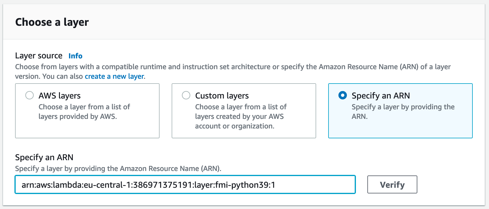

Getting Started
C++
...
FMI::Communicator comm(peer_id, 3, config_path, comm_name);
if (peer_id == 0) {
d = 42.0;
}
comm.bcast(d, 0);
comm.scatter(vec, recv, 0);
assert(d == 42.0);
assert(recv.get()[0] == peer_id);
comm.allreduce(id, id_sum, f);
assert(id_sum == 3);
Small data wrapper around a generic type T with some helper utilities.
Definition: Data.h:12
Small wrapper around an arbitrary C++ binary function with signature T(T,T), i.e. accepting two argum...
Definition: Function.h:7
Python
import fmi
...
comm = fmi.Communicator(peer_id, 3, config_path, comm_name)
if peer_id == 0:
comm.bcast(42, 0, fmi.types(fmi.datatypes.int))
else:
bc_res = comm.bcast(None, 0, fmi.types(fmi.datatypes.int))
assert bc_res == 42
sc_res = comm.scatter([0, 1, 2], 0, fmi.types(fmi.datatypes.int_list, 3))
assert sc_res[0] == peer_id
id_sum = comm.allreduce(peer_id, fmi.func(fmi.op.sum),
fmi.types(fmi.datatypes.int))
assert id_sum == 3
id_custom = comm.allreduce(peer_id,
fmi.func(fmi.op.custom, lambda a, b: 3 * a + b, False, False),
fmi.types(fmi.datatypes.int))
assert id_custom == 5
Installation / Compilation
C++
To facilitate compiling, there is a Docker image with all necessary dependencies:
docker pull ghcr.io/opencorech/fmi-build-cpp:latest
Python
AWS Lambda Layer
The simplest way to use the library are the AWS Lambda layers, available under the following ARNs:
arn:aws:lambda:eu-central-1:386971375191:layer:fmi-python36:1arn:aws:lambda:eu-central-1:386971375191:layer:fmi-python37:1arn:aws:lambda:eu-central-1:386971375191:layer:fmi-python38:1arn:aws:lambda:eu-central-1:386971375191:layer:fmi-python39:1
If you are using CloudFormation, you simply have to reference the ARN with Layers:, a minimal example for Python 3.9 looks like this:
AWSTemplateFormatVersion: '2010-09-09'
Transform: 'AWS::Serverless-2016-10-31'
Resources:
lambdaml:
Type: AWS::Serverless::Function
Properties:
FunctionName: fmi-example
Runtime: python3.9
Layers:
- arn:aws:lambda:eu-central-1:386971375191:layer:fmi-python39:1
When using the AWS Management Console, you can add it under Layers -> Add a layer -> Specify an ARN:

Compilation
To compile the library by yourself, there are preconfigured Docker images for all Python versions that contain the correct dependencies (FMI dependencies, Python headers, and the correct Boost.Python):
docker pull ghcr.io/opencorech/fmi-build-python39:latest